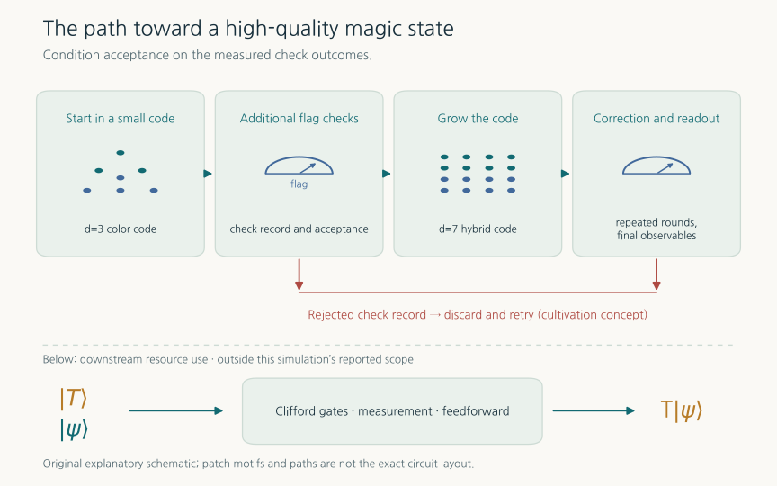
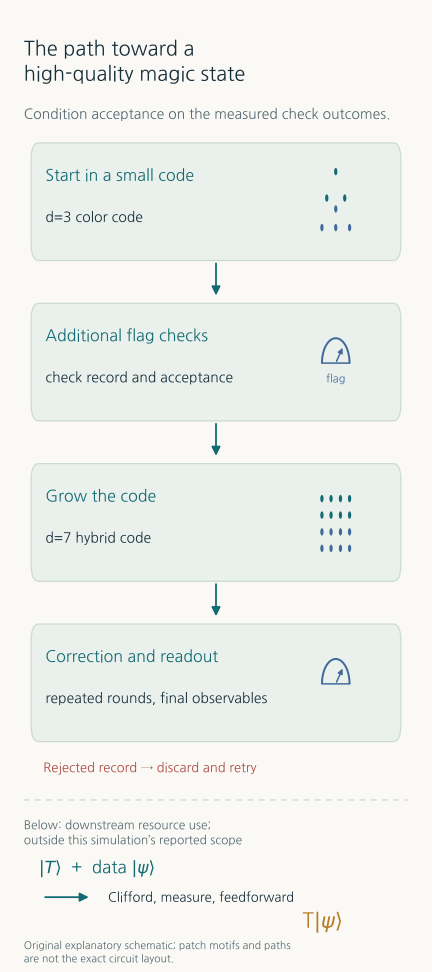
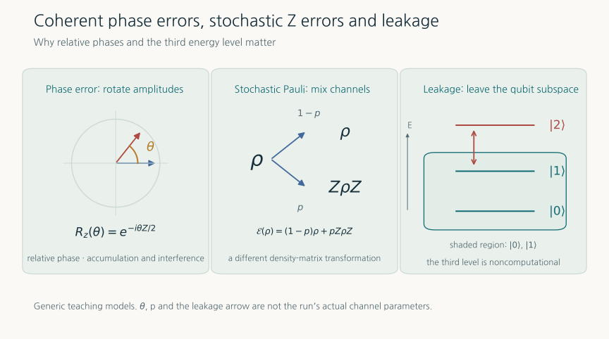
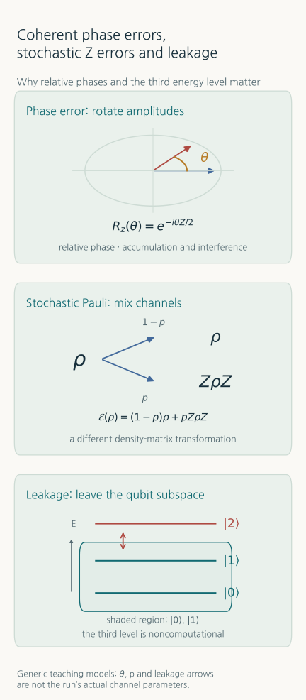
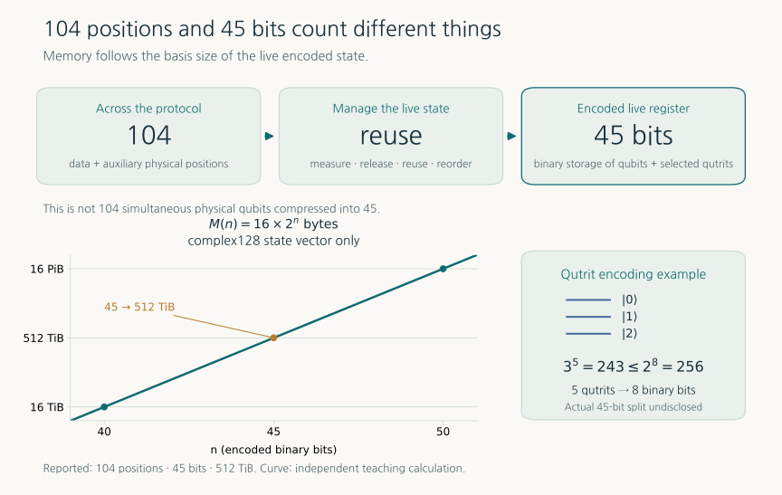
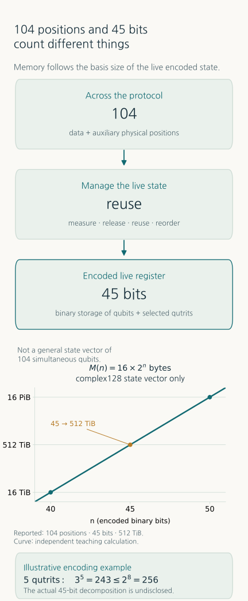

Classical Simulation of a 104-Qubit Protocol: Testing Magic-State Cultivation on JUPITER
Why building reliable quantum computation needs large classical calculations - magic states, coherent errors and leakage, and the meaning of a 45-bit state register
TECH REVIEW · 20 October 2026 · Quantum error correction and high-performance computing

Contents
- 1. A classical supercomputer for designing quantum computers
- 2. From logical memory to computation: the role of magic states
- 3. The protocol being simulated
- 4. Why coherent phase errors and leakage differ
- 5. From 104 locations to a 45-bit storage register
- 6. What 512 TiB tells us
- 7. Improvements require matched conditions
- 8. Verification and the information still needed
- 9. A route toward materials and chemistry applications
- References
1. A classical supercomputer for designing quantum computers
Quantum error correction aims to build reliable logical qubits from imperfect physical qubits. Storing information for a long time, however, does not complete a useful computer. A machine must also perform logical gates, change its actions in response to measurements, and retry failed preparations. Testing this whole process under noise is part of its design.
On 19 October 2026, NVIDIA announced a simulation of a magic-state cultivation protocol using 104 physical qubit locations on JUPITER at the Jülich Supercomputing Centre. The computation used 8,192 GH200 GPUs. This was a classical GPU calculation of a quantum protocol, rather than a 104-qubit experiment on a quantum processor. [1,2]
Two questions explain its significance. Why are magic states a bottleneck in fault-tolerant computation? And how could a circuit involving 104 locations be computed with a maximum encoded state register of 45 bits? The second answer involves reusing storage after measurement and packing three-level states together. It does not mean compressing an arbitrary 104-qubit state into a smaller state.
2. From logical memory to computation: the role of magic states
A Clifford gate maps Pauli operators to Pauli operators. Many error-correction operations fit this framework. With stabilizer-state inputs, Clifford gates, Pauli measurements and suitable Pauli noise, an efficient stabilizer simulator can avoid storing a huge state vector. [3]
Universal quantum computation requires resources beyond that restricted framework. One example is the T gate. We use the standard convention
An appropriately prepared nonstabilizer resource can be combined with Clifford operations, measurement and feedforward to implement a logical T operation. A magic state is consumed in that process. Not every non-Clifford circuit is hard to simulate, but the simple stabilizer shortcut no longer covers general computation. [3]
Conventional distillation processes several imperfect resource states together. Cultivation instead prepares a state in a small code, repeatedly checks it and transfers it into a larger code. A failed check can cause the attempt to be discarded and restarted. Gidney, Shutty and Jones analyzed the resource savings of this approach under specified circuit-level noise assumptions. [4]
Output fidelity alone therefore cannot characterize a factory. For independent, identical attempts with acceptance probability and fixed cost per attempt, a simple average gives
This is a teaching relation. Early termination, parallel preparation, resets and buffer waiting change a real cost model. Its lesson is that low output error and adequate acceptance must be achieved together.
3. The protocol being simulated
The technical account describes preparation in a distance-3 color code, additional flag measurements, growth into a distance-7 hybrid color/surface-code structure, and further error correction and readout. Flags are auxiliary measurements that expose particular error-propagation paths. The 104 locations include data and auxiliary physical positions used across the protocol sequence. [1]


Code distance is important for describing correctable or detectable error structure. Nevertheless, the effective suppression order of a complete noisy circuit does not automatically equal its static code distance. Error propagation, non-Clifford layers and measurements all matter. This motivates the additional flag research. [5]
4. Why coherent phase errors and leakage differ
Physical noise cannot always be replaced by independent Pauli errors. Small rotations repeated in the same direction can accumulate phase coherently. For stochastic Z errors, the statistics of even and odd error counts instead determine the outcome.
Consider a single-qubit teaching example: prepare , apply a total of times, then measure X. There is no intervening error correction. Match the one-step X-measurement error by choosing an independent stochastic Z error probability . Then
For radians and , these are approximately 0.997% and 0.0500%. Matching a one-step probability does not match repeated behavior. These values are independently calculated from the displayed formulas; they do not predict the JUPITER protocol's error rate.
Leakage presents a different problem. If a physical element occupies a third level outside the two computational levels, an additional component is needed. As a pure-state illustration,
The probability of remaining in the computational subspace is . Unlike a Z error within that subspace, leakage can change how gates and measurements must be interpreted. The JUPITER technical account includes coherent phase errors and third-level leakage at selected physical locations, without publishing numerical noise strengths. [1]


5. From 104 locations to a 45-bit storage register
Direct storage of an arbitrary pure n-qubit state requires complex amplitudes. An arbitrary entangled state with 104 simultaneously live qubits therefore cannot fit into a 45-bit state vector.
This calculation exploits the protocol's time structure. Once an auxiliary state is measured and no longer needs to remain quantum, its storage can be released and reused later. Classical dependencies and measurement probabilities must still be preserved. This is different from arbitrarily discarding entanglement that remains necessary. Reordering operations reduces the storage that must be simultaneously live. [1]
Qutrit packing provides another saving. Five three-level systems have basis states. Assigning two binary bits separately to each qutrit would require ten bits. Packing the five together instead maps them exactly into 256 entries represented by eight bits:
The remaining thirteen entries are encoding padding, not new physical levels. This mapping does not truncate valid amplitudes. It also cannot, by itself, explain the full 104-to-45 reduction. The public account reports a maximum 45-bit encoded register but does not specify the exact peak breakdown of two- and three-level degrees of freedom. [1]


6. What 512 TiB tells us
With complex128 storage at sixteen bytes per amplitude, state-vector memory is bytes. The following values are independently calculated from that expression. TiB and PiB mean and bytes.
| Encoded register | State-vector memory only | Interpretation |
|---|---|---|
| 40 bits | 16 TiB | 1/32 of the 45-bit case |
| 45 bits | 512 TiB | Reported maximum register |
| 46 bits | 1 PiB | One additional bit doubles memory |
| 50 bits | 16 PiB | 32 times the 45-bit case |
At 45 bits there are , roughly 35.2 trillion amplitudes. Dividing 512 TiB evenly among 8,192 GPUs gives 64 GiB per GPU. This is state storage alone, excluding communication buffers, workspaces and factorization analysis. Performance also depends on amplitude exchanges, operation placement and the network. Memory capacity alone cannot determine runtime or energy consumption.
The technical account also describes cuBLASMp/cuSOLVERMp-based factorization analyses of selected state partitions to investigate compact approximate representations. The reference simulation continued from the original state. An analysis of possible factorization is not evidence that the full reference computation proceeded with a truncated tensor representation. [1,6]
7. Improvements require matched conditions
Different kinds of improvement numbers appear in the surrounding literature. The original cultivation study compares qubit-rounds, a space-time resource, under specified noise and target-fidelity assumptions. NVIDIA's “90% fewer qubits” is a company summary claim. The announcement does not provide a matched comparison of target error, throughput and retry accounting, so it does not establish a universal 90% reduction in physical qubits for fault-tolerant computing. [2,4]
In a separate preprint, Chan and colleagues analyze error propagation through non-Clifford cultivation circuits and introduce additional flags. For distance-5 cultivation before escape, at circuit-level depolarizing noise probability , one reported example reduces logical error by a factor of 4.9 while increasing attempts per accepted state by a factor of 1.36. Stronger checks can improve output quality and increase acceptance cost simultaneously. Those are not measurements from JUPITER's coherent-error and leakage simulation. [5]
There is also physical-hardware evidence. Google's Willow cultivation experiment reports a 40-fold error reduction relative to uncultivated states and fidelity 0.9999(1), together with postselection retaining 8% of attempts. That is a processor experiment; its metrics cannot be directly ranked against the classical JUPITER calculation. [7]
8. Verification and the information still needed
The approximately agreement in probabilities described in the technical article concerns small packed-circuit cross-checks between state-vector and tensor-network methods at NVAQC. It is neither the full 104-location protocol's logical error rate nor a guarantee for every output. The inspected public sources do not report full-run runtime, GPU-hours, shot or trajectory count, acceptance yield, output logical error or uncertainty intervals. [1]
We use 8,192 GPUs, consistent across the technical introduction and official release. One technical paragraph instead prints 8,912. This review checks the public explanation, formulas and memory arithmetic; it does not reproduce the JUPITER run. Existing cultivation research code and a reproducible package for this full campaign are also distinct resources.
The most useful next evidence would be output error and acceptance versus noise strength, cost per attempt and per accepted state, and the circuits, decoder, sampling procedure and statistical intervals. These would show which design decisions the large calculation changes beyond the implementation checks available on smaller circuits.
9. A route toward materials and chemistry applications
Resource estimates for fault-tolerant chemistry and materials simulation depend on non-Clifford resource demand and supply rate as well as logical-qubit count. A cheaper, reliable magic-state factory could change an algorithm's time and space budget. Establishing that connection requires matching the algorithm's T-resource demand and tolerated failure probability to the factory's acceptance, error and throughput.
This result does not demonstrate a more accurate molecular energy or quantum advantage. Its practical connection is the ability to test resource preparation under more realistic noise before committing to hardware design. Such calculations can investigate which checks reveal coherent errors or leakage, where additional measurements help, and how fidelity gains affect retries. Large classical calculations supply a reference. Comparing that reference with a device's calibration, measurement and leakage-removal behavior is the route toward fault-tolerant engineering.
The source DQB issue is available as the 20 October 2026 archived PDF; other issues remain in the document archive.
References
- Holmes, Kloss, Pancotti and Svore. Advancing Fault-Tolerant Quantum Computing with GPU-Accelerated Simulation. NVIDIA Quantum, 19 October 2026. Principal technical account of the protocol, noise, storage and small-circuit cross-checks.
- NVIDIA. NVIDIA Runs Record Simulation of Fault-Tolerant Quantum Computing at Jülich Supercomputing Centre, 19 October 2026. System context: JSC, JUPITER.
- Bravyi and Kitaev. Universal Quantum Computation with ideal Clifford gates and noisy ancillas. Physical Review A 71, 022316 (2005).
- Gidney, Shutty and Jones. Magic state cultivation: growing T states as cheap as CNOT gates, first released in 2024. Original circuits, statistics and code.
- Chan, Strikis, Sun and Cai. Diagnosing and Restoring the Degraded Fault Distance of Magic State Cultivation, v3, 30 September 2026. Preprint; a separate study from the JUPITER campaign.
- NVIDIA. cuStateVec, cuBLASMp, cuSOLVERMp. State-vector and distributed linear-algebra software documentation.
- Rosenfeld et al. Magic state cultivation on a superconducting quantum processor. Physical-hardware experiment; checked against Google Quantum AI's 15 October 2026 explanation.